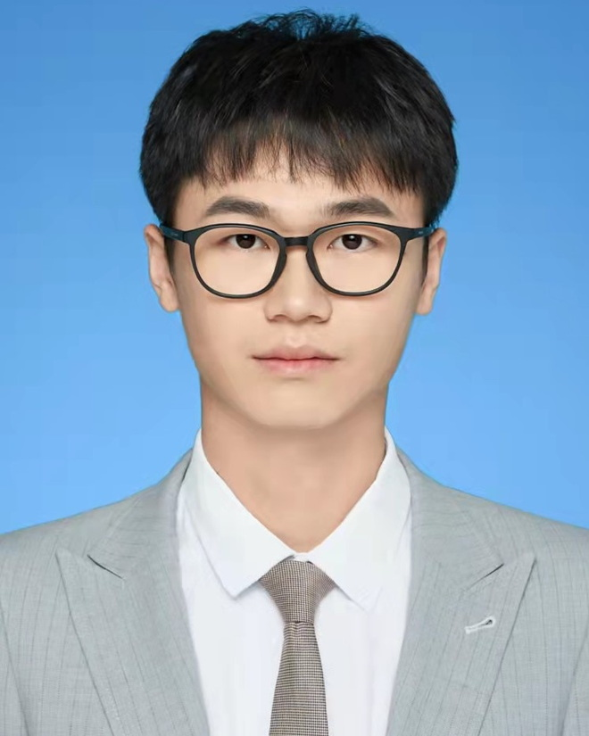

Digital Spectrum Twin for UAV Spectrum Sharing: Agentic Closed-Loop Optimization via Generative Goal-Oriented DRL
Under review
Ph.D. · Nanjing, China
AI for wireless networks
College of Electronic and Information Engineering
Nanjing University of Aeronautics and Astronautics
I design learning-based decision engines for spectrum sharing and low-altitude UAV networks — from deep reinforcement learning to agentic closed-loop optimization.

Hi! I am Rui Ding. I recently completed my Ph.D. at the College of Electronic and Information Engineering, Nanjing University of Aeronautics and Astronautics (NUAA), advised by Prof. Fuhui Zhou. From February 2025 to February 2026 I was a visiting Ph.D. student at the University of Padova with Prof. Michele Zorzi.
My work sits where machine learning meets radio resource management. Low-altitude networks are crowded, contested and partially observable: UAVs must share licensed and unlicensed spectrum while jammers, uncertain demand and fast topology changes make classical optimization brittle. I build methods that close that gap — deep reinforcement learning with optimization structure baked in, generative models that predict what the spectrum will do next, and agentic loops that reason about their own decisions instead of reacting to them.
I have published more than 20 papers in IEEE TWC, TMC, TCOM, JSTSP, IoT-J and IEEE Network, and in the flagship IEEE conferences (ICC, GLOBECOM, ICCC, WCSP), with three Best Paper Awards. I also hold eight granted patents and have led five funded projects as principal investigator.
Nanjing University of Aeronautics and Astronautics · Advisor: Prof. Fuhui Zhou
University of Padova, Italy · Advisor: Prof. Michele Zorzi
Nanjing University of Aeronautics and Astronautics · Advisor: Prof. Fuhui Zhou
Huawei Technologies Co., Ltd.
Nanjing University of Information Science and Technology
Completed my Ph.D. at NUAA. Now open to postdoctoral positions.
Toward 6G: Spectrum management in low-altitude aerial information networks published in IEEE Network.
Best Paper Award at IEEE/CIC ICCC 2026 for IS3A, an integrated soft-sensing and spectrum allocation scheme for UAV spectrum sharing.
Concluded a one-year visiting Ph.D. at the University of Padova with Prof. Michele Zorzi.
A novel PODMAI framework enhanced by user demand prediction published in IEEE Transactions on Communications, vol. 73, no. 9.
Selected for the China Association for Science and Technology Youth Science and Technology Talent Cultivation Program (Ph.D. Student Special Program) as principal investigator.
Chinese patent CN117880821B granted — a resource optimization method for drone spectrum sharing networks.
Started a visiting Ph.D. at the University of Padova, Italy.
From external interaction to internal inference published in IEEE Transactions on Wireless Communications, vol. 23, no. 9.
Best Paper Award at IEEE GLOBECOM 2023 — 17 awards out of 3,200+ submissions, top 0.5%.
Started my Ph.D. at NUAA, continuing in Prof. Fuhui Zhou's group.
More than 20 papers in internationally renowned communication journals and flagship IEEE conferences. Rui Ding is highlighted in bold; 3 Best Paper Awards.
Under review
IEEE Transactions on Mobile Computing·Accepted
IEEE Network·2026
IEEE Transactions on Cognitive Communications and Networking·vol. 12, pp. 1905–1917, 2026
IEEE Transactions on Communications·vol. 73, no. 9, pp. 8243–8259, Sept. 2025
IEEE Transactions on Communications·vol. 73, no. 8, pp. 6052–6067, Aug. 2025
IEEE Internet of Things Journal·2025
Chinese Journal of Aeronautics·2025
IEEE Journal of Selected Topics in Signal Processing·Accepted
IEEE Transactions on Cognitive Communications and Networking·Accepted
IEEE Journal of Selected Topics in Signal Processing·Accepted
Chinese Journal of Aeronautics·Accepted
IEEE Transactions on Consumer Electronics·Accepted
IEEE Wireless Communications·Minor revision·arXiv:2602.13245
IEEE Transactions on Wireless Communications·vol. 23, no. 9, pp. 12099–12114, Sept. 2024
IEEE Transactions on Computational Social Systems·vol. 11, no. 6, pp. 7286–7298, Dec. 2024
IEEE Transactions on Wireless Communications·vol. 23, no. 5, pp. 4228–4242, May 2024
IEEE Transactions on Knowledge and Data Engineering·vol. 36, no. 2, pp. 840–853, Feb. 2024
IEEE Internet of Things Journal·vol. 9, no. 18, pp. 18164–18165, Sept. 2022
IEEE/CIC International Conference on Communications in China (ICCC) 2026·Accepted
17th International Conference on Wireless Communications and Signal Processing (WCSP)·Chongqing, China, 2025
IEEE International Conference on Communications (ICC) 2025·Montreal, Canada, pp. 2279–2284
IEEE/CIC International Conference on Communications in China (ICCC)·Accepted
IEEE/CIC International Conference on Communications in China (ICCC)·Accepted
IEEE Global Communications Conference (GLOBECOM) 2026·Submitted
IEEE Global Communications Conference (GLOBECOM) 2024·Cape Town, South Africa, pp. 139–144
IEEE/CIC International Conference on Communications in China (ICCC) 2023·pp. 1–6
IEEE Global Communications Conference (GLOBECOM) 2023·pp. 2662–2667
International Conference on Ubiquitous Communication (Ucom) 2023·Xi'an, China, pp. 356–360
IEEE International Conference on Communications (ICC) 2022·Seoul, Korea, pp. 1962–1967
No papers in this category.
Five funded projects led as principal investigator, plus four national and industry projects as a main participant.
Active reviewer for more than five journals and flagship conferences.
Invited speaker at the 3rd International Conference on Frontiers of Artificial Intelligence and Machine Learning (FAIML 2024).
I am looking for postdoctoral positions starting in 2027.
The fastest way to reach me is email. I am happy to discuss spectrum sharing, UAV networks, learning-based optimization, or a collaboration.
College of Electronic and Information Engineering
Nanjing University of Aeronautics and Astronautics
Nanjing, China